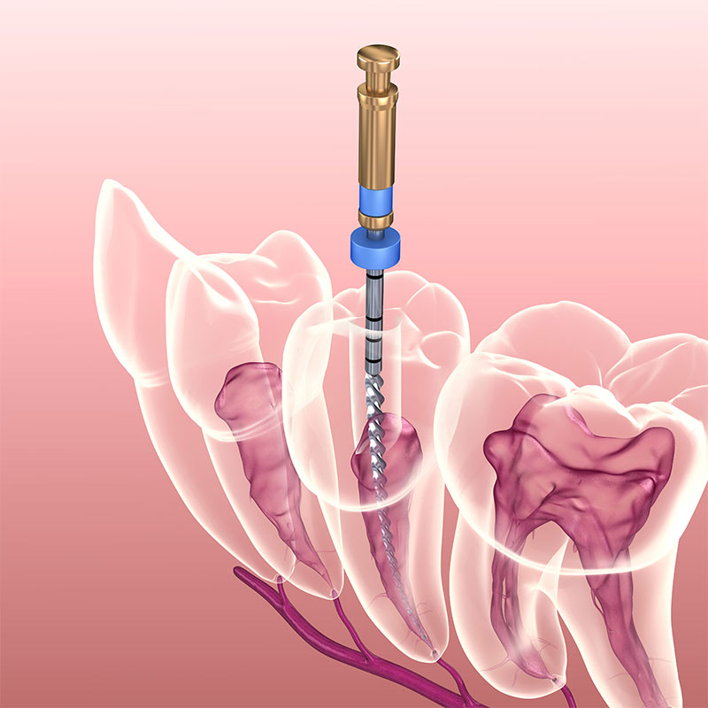
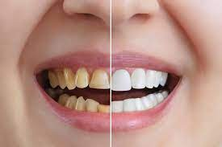
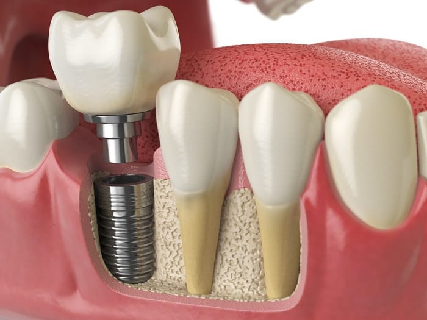
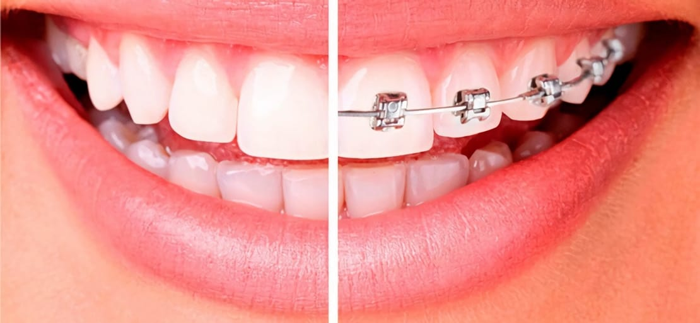
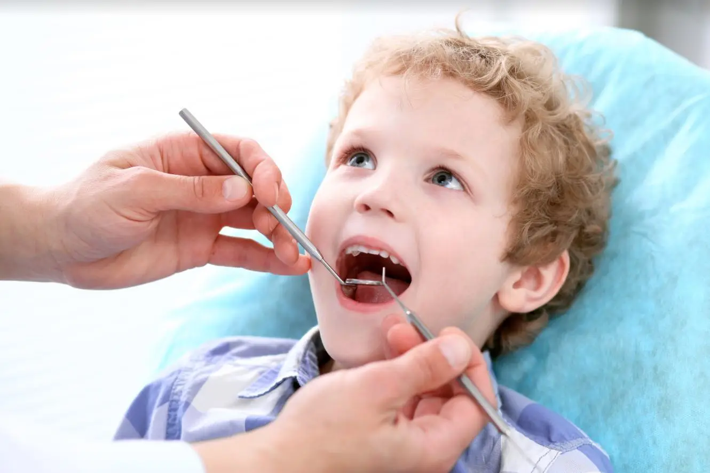

¿Qué es la endodoncia? La endodoncia es una especialidad odontológica que trata los problemas de la pulpa dental y los tejidos que rodean las raíces de los dientes. La pulpa dental es el tejido blando que contiene los nervios y los vasos sanguíneos de los dientes. Cuando se inflama o se infecta, puede causar dolor, inflamación e incluso abscesos. La endodoncia consiste en eliminar la pulpa dañada, limpiar y desinfectar el conducto radicular y rellenarlo con un material inerte. Después, se coloca una reconstrucción o una corona sobre el diente para protegerlo y restaurar su función. ¿Qué tipos de endodoncia existen? Hay diferentes tipos de endodoncia según el grado de afectación de la pulpa y el número de conductos radiculares. La endodoncia preventiva se hace cuando la pulpa está levemente inflamada pero puede recuperarse. Se elimina la caries y se coloca un material protector sobre la pulpa para aislarla y estimular su regeneración. La endodoncia convencional o conductoterapia se hace cuando la pulpa está irreversiblemente dañada o necrosada. Se accede a la cámara pulpar y se limpian los conductos con instrumentos especiales y soluciones desinfectantes. Luego se rellenan los conductos con un material llamado gutapercha y se sella la entrada con un cemento especial. La endodoncia quirúrgica o apicectomía se hace cuando hay una lesión o una infección persistente en el ápice de la raíz. Se accede al ápice desde la encía y se corta una pequeña porción de la raíz junto con el tejido infectado. Luego se sella el extremo de la raíz con un material biocompatible y se sutura la encía. ¿Qué beneficios tiene la endodoncia? La endodoncia es un tratamiento seguro y eficaz que permite conservar los dientes afectados y evitar las complicaciones para la salud bucal y general. La endodoncia requiere anestesia local y suele realizarse en una o varias sesiones. Después de la endodoncia, es normal sentir alguna molestia o sensibilidad que se alivia con analgésicos y antiinflamatorios. También es importante mantener una buena higiene bucal y acudir a las revisiones periódicas con el dentista.
La estética dental es una rama de la odontología que se dedica a mejorar la apariencia de los dientes y la sonrisa. La estética dental puede ayudar a corregir problemas como el color, la forma, el tamaño, la posición o la alineación de los dientes, así como la armonía facial y la salud bucal. Algunos de los tratamientos más comunes de la estética dental son: El blanqueamiento dental, que consiste en aplicar un agente blanqueador sobre los dientes para eliminar las manchas y aclarar el tono del esmalte. El blanqueamiento dental puede realizarse en el consultorio del dentista o en casa con unas férulas personalizadas1. Las carillas dentales, que son unas láminas finas de porcelana o composite que se adhieren a la superficie de los dientes para modificar su forma, color o tamaño. Las carillas dentales pueden solucionar problemas como el apiñamiento, las diastemas (espacios entre los dientes), las fracturas o las decoloraciones2. La ortodoncia, que es el tratamiento que se utiliza para corregir la posición y la mordida de los dientes mediante unos dispositivos llamados brackets o alineadores invisibles. La ortodoncia puede mejorar la función masticatoria, la respiración, el habla y la estética de los dientes y la cara3. Los implantes dentales, que son unos tornillos de titanio u otros materiales biocompatibles que se insertan en el hueso de los maxilares y funcionan como raíces artificiales. Sobre los implantes se colocan unas prótesis dentales que reemplazan los dientes perdidos por diferentes causas. Los implantes dentales permiten recuperar la estética, la salud y la función de la boca. La estética dental es una especialidad que requiere un diagnóstico preciso, una planificación personalizada y una ejecución cuidadosa por parte de profesionales cualificados y con experiencia. La estética dental tiene múltiples beneficios para la salud bucal y general, ya que mejora la apariencia, la confianza, la autoestima, la higiene, la prevención y el bienestar de las personas.
La implantología dental es una especialidad odontológica que reemplaza los dientes perdidos mediante implantes dentales. Los implantes dentales son dispositivos de titanio u otros materiales biocompatibles que se insertan en el hueso de los maxilares y funcionan como raíces artificiales. Sobre los implantes se colocan prótesis dentales que imitan los dientes naturales. La implantología dental requiere un diagnóstico preciso, una planificación adecuada y una ejecución cuidadosa para garantizar el éxito del tratamiento. Los implantes dentales deben integrarse con el hueso del paciente, un proceso llamado osteointegración, que puede durar varios meses. Una vez que los implantes están firmemente sujetos al hueso, se pueden colocar las prótesis dentales, que pueden ser fijas o removibles. La implantología dental es una disciplina en constante evolución, que incorpora nuevas técnicas, materiales e innovaciones tecnológicas para mejorar los resultados y reducir los tiempos de tratamiento. La implantología dental es un tratamiento seguro y eficaz, siempre que se realice por profesionales cualificados y con experiencia, y que se sigan las indicaciones y los cuidados postoperatorios. También es importante mantener una buena higiene bucal y acudir a las revisiones periódicas con el dentista.
La ortodoncia es una especialidad de la odontología que se encarga de corregir la posición de los dientes y la mordida para mejorar la estética, la salud y la función de la boca. La ortodoncia utiliza diferentes dispositivos, como los brackets, que aplican fuerzas sobre los dientes y los huesos maxilares para moverlos gradualmente hasta lograr una alineación adecuada. La ortodoncia puede tratar problemas como el apiñamiento dental, la mordida abierta, la mordida cruzada, la sonrisa gingival, el bruxismo, el dolor de la articulación temporomandibular y las asimetrías faciales. La ortodoncia requiere un diagnóstico preciso, una planificación personalizada y un seguimiento periódico para garantizar el éxito del tratamiento. La duración del tratamiento depende de la complejidad del caso y del tipo de dispositivo utilizado. Existen diferentes tipos de ortodoncia, como la ortodoncia invisible, la ortodoncia lingual y la ortodoncia con brackets metálicos o estéticos. Cada tipo de ortodoncia tiene sus ventajas e inconvenientes, por lo que es importante consultar con un especialista para elegir el más adecuado para cada paciente. La ortodoncia es un tratamiento seguro y eficaz que tiene múltiples beneficios para la salud bucal y general. La ortodoncia mejora la apariencia de los dientes y la cara, facilita la higiene bucal y previene las caries y las enfermedades periodontales, mejora la masticación y la digestión, favorece la respiración y el habla, reduce el estrés y el desgaste de los dientes, alivia el dolor y las tensiones musculares y aumenta la confianza y la autoestima.
La odontopediatría es la especialidad de la odontología que se ocupa de la salud bucodental de los niños desde su nacimiento hasta la adolescencia. El odontopediatra es el profesional que se encarga de prevenir, diagnosticar y tratar las enfermedades y los problemas que afectan a los dientes y las encías de los más pequeños, así como de orientar a los padres sobre los cuidados y los hábitos que deben seguir para mantener una buena higiene bucal. La odontopediatría tiene como objetivo principal conservar los dientes temporales o de leche, que son fundamentales para el desarrollo de los maxilares, el crecimiento facial, la masticación, el habla y la autoestima de los niños. Los dientes temporales empiezan a salir entre los seis y los doce meses de edad y se empiezan a cambiar por los dientes permanentes entre los seis y los doce años. Durante este periodo, es importante que el niño visite al odontopediatra al menos una vez al año para realizar revisiones, limpiezas, aplicaciones de flúor o selladores y tratamientos preventivos o correctivos si fuera necesario. Entre las enfermedades y los problemas más frecuentes que trata la odontopediatría se encuentran: La caries dental, que es la destrucción del esmalte y la dentina por la acción de las bacterias. La caries puede provocar dolor, infección e incluso la pérdida del diente. Para prevenir la caries se recomienda evitar el consumo excesivo de azúcares, cepillarse los dientes después de cada comida y usar hilo dental y enjuague bucal. Para tratar la caries se realiza una obturación o empaste, que consiste en limpiar la cavidad afectada y rellenarla con un material restaurador. Los traumatismos dentales, que son lesiones causadas por golpes o caídas que pueden afectar al diente, al hueso o a los tejidos blandos. Los traumatismos pueden provocar fracturas, luxaciones o avulsiones (salida del diente de su alveolo). Para prevenir los traumatismos se recomienda usar protectores bucales en actividades deportivas o recreativas. Para tratar los traumatismos se realiza una valoración clínica y radiográfica y se aplica el tratamiento más adecuado según el tipo y la gravedad de la lesión. Las maloclusiones dentales, que son alteraciones en la posición o el tamaño de los dientes o los maxilares que afectan a la mordida, la estética y la función oral. Las maloclusiones pueden ser hereditarias o adquiridas por hábitos perniciosos como el chupete, el biberón, el dedo o el bruxismo (rechinar los dientes). Para prevenir las maloclusiones se recomienda eliminar los hábitos perniciosos, controlar el crecimiento facial y realizar revisiones periódicas. Para tratar las maloclusiones se realiza una ortodoncia, que consiste en colocar unos dispositivos llamados brackets o alineadores que ejercen una fuerza sobre los dientes para moverlos hasta conseguir una alineación correcta. La odontopediatría es una especialidad muy importante para garantizar la salud bucodental de los niños y evitar problemas futuros en su edad adulta. La odontopediatría también tiene un componente educativo y psicológico, ya que busca crear un vínculo positivo entre el niño y el dentista, fomentar una actitud responsable hacia su salud oral y transmitir confianza y seguridad.
